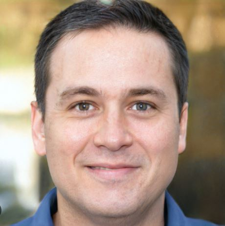

Sobre Nosotros!
Somos una Organización llamada PowerPC fundada en abril del año 2022 que se dedica a darte la mejor guía eficaz y rapida para armar tu primera computadora gamer y que a la vez te ofrecemos los mejores productos en calidad/precio para que empiezes a armar tu PC deseada.
Integrantes
Esta Organización se conforma por ahora por 2 integrantes que se mostraran en la siguente tabla:
| Integrantes | Dueño | Inversor |
|---|---|---|
| Nombre y Apellido | Elias Moste | Marcos Eredia |
| Apariencia |  |